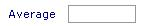

Add Daily Catch Entry
Edit Daily Catch Entry
Delete Daily Catch Entry
|
Add Daily Catch Entry
| 1) Click the “AddNew” button.Then you get the following screen: |
|
| 2)Select the Unit. |
| 3) Select the Landing Center. |
| 4) Select the Main Supplier. |
| 5) Enter the Vehicle No. |
| 6) Enter the Suppliers Challan No. |
| 7) Enter the Weighment Challan No. |
| 8) Please provide the Entry Date. |
| 9) Please provide the Entry Time. |
| 10) Select the fish . Then you get process code for the selected fish. |
| 11) Select the Process code . Then you get either Count entry or Grade list based on the values specified for "Received By" in the Process Code Entry. |
| Count entry |
| 12)You can enter the values seperated by comma.(e.g. : 25,30,25).Then the system will calculate the average of these values and populated it to the Average textbox. |
|  |
| 13)If you get Grade list ,then you can select one of the Grade from the list . |
| 14) There are two options 1)Basket Wt and 2)Net Wt. |
| Option 1: If you select the Basket Wt. You should enter the count details. |
|
| 15)In "count details" you can enter 180 entries (Gross Wt) , 15 per column .
At the end of each column the system will calculate the total of GWt and BWt and the Net weight (GWt – BWt) .The default Basket Wt is based on the values in the master database for the Process Code.If you want to reset the BWt,you should click the reset button against the Basket Weight in the "Weight Calculation " section .
|
|
| 16)In "Weight Calculation" the system will calculate total Net Weight. |
| 17)Enter the Adjustment weight and reason.then the system will calculate the Actual Wt(Net weight – Adjustment). |
| 18)Enter the Local Quantity and reason. |
| 19)Enter the Wastage and reason. |
| 20)Enter the Soft and reason. |
| 21)The system will calculate the Effective Weight. |
| Actaul Weight = Net Wt - Adjustment. |
| Effective Weight = Actual Weight - Local Quantity - Wastage - Soft. |
| OPtion 2:If you select the Net Wt .then you can directly enter the Weight Calculation section as described above. |
|
|
| 22)Enter the Good for Packing , as shown in below. |
|
| 23)The System will calculate the "For Peeling". |
| 24)Enter the Remarks. |
| 25)You can select multiple entries in "Quality" section as show below. |
|
| 26)In the "Declared" section. |
|
| 27)Enter the Weight. |
| 28)Enter the Count. |
| 29)Enter the Ice Weight. |
| 30) You can add the new raw material in the same challan by clicking the "Save & Add New Raw Material in Challan" button. |
| 31) You can add the new raw material in new challan by clicking the "Save & Add New Challan" button. |
| 32) You can save the values by clicking the "Save & Exit" button. |
|
|
|
Edit Daily Catch Entry
|
|
|
|
|
|
|
|
|
| 1)Click the "Edit" button .Then you get the following screen: |
 |
| 2) You can fill the entries same as in "Add Daily Catch Entry". |
| 3) Click on the "Save Changes" button.You will be prompted for confirmation.Click on Ok button. |
|
|
|
| Delete Daily Catch Entry |
|
|
|
| 1) You can select more than one entries by selecting the checkboxes for deletion. |
| 2) Click the Delete button.You will be prompted for confirmation.(as shown below):
|
|
| Click on the Ok buton.The selected entry(entries) will be removed from the Daily Catch Entry list. |